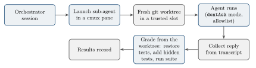
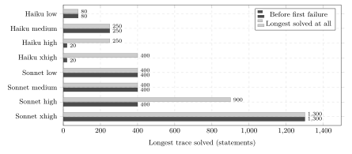
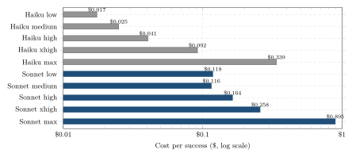
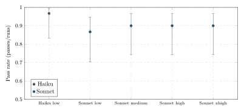
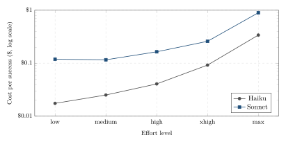
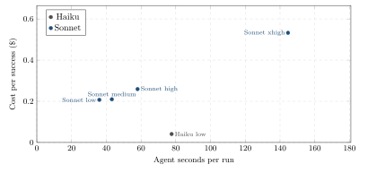

An orchestrating agent often delegates work to cheaper sub-agents and
must choose a model and a reasoning effort level for each, which
together drive cost, wall-clock time, and answer quality. We measure how
much these choices matter for Claude Haiku 5.5 and Claude Sonnet 5.5 run
as Claude Code sub-agents in terminal panes. Three experiments covered
229 tool-free reasoning runs, 120 coding runs on an easy set of 12
tasks, and 150 coding runs on a hard set of 10 tasks, all built from a
private Python repository, with API-equivalent costs computed from
session transcripts. Haiku low passed all 30 fix and
feature runs across both sets (Wilson 95 % interval 89–100 %), at $0.041
per success over all hard-set tasks, reviews included, against $0.207
for Sonnet low. Effort above medium added cost
with no accuracy gain we could detect, though nearly every task passed
at every configuration: Sonnet xhigh cost 2.2 to 2.6 times
Sonnet low per success. Model and effort did matter for
long exact reasoning without tools: Sonnet xhigh alone
traced 1,300 statements without failure, while Haiku high
and xhigh took a wrong shortcut at 40. We hypothesize that
code-review misses are shared within a model more than across models;
this rests on a handful of cases, with exceptions in both directions. We
route lookups and code changes to Haiku low, review to both
models in parallel, and long tool-free reasoning to Sonnet
xhigh. The main caveat is a ceiling effect: nearly every
coding task passed at every configuration, so we did not find where
coding reliability breaks down.
Coding agents increasingly work as orchestrators. A top-level session decomposes a request, hands independent pieces to sub-agents, and merges what comes back. Each hand-off forces a choice: which model should run the sub-agent, and at what reasoning effort? These two settings determine what a delegated slice costs, how long the orchestrator waits, and whether the returned answer can be trusted. A cheap setting that fails wastes a round trip. An expensive setting that was not needed wastes money and time on every slice.
In practice, we expect the choice is often made by habit or by a rule of thumb; a common one is to use the largest model for anything difficult and the smallest for lookups. Effort levels add a second axis with little guidance. Higher effort means more thinking tokens, and one might expect it to help on harder work, but it also raises cost and latency, and it is not obvious that it helps on the tasks sub-agents are actually given. We could not find measurements that let an orchestrator pick a model and effort for a given slice of work.
We study this question directly. We run Claude Haiku 5.5 and Claude
Sonnet 5.5 as sub-agents at up to five effort levels, low,
medium, high, xhigh, and
max. We call one model at one effort level a
config. Each sub-agent runs as a separate Claude Code session
in its own terminal pane, so the setting resembles real orchestration
rather than a bare API call. We use three experiments. The first asks
agents to reason exactly, without tools, over families of tasks whose
difficulty we can scale. The second and third give agents coding tasks
in a private Python repository: locating code, fixing planted bugs,
replaying real feature commits, and reviewing diffs with planted bugs.
Fix and feature tasks are graded by running tests after the agent exits,
not by trusting the agent’s own report. For every run we compute the
API-equivalent cost from the session transcript, so we can compare
configs by dollars per successful task as well as by pass rate.
The picture that emerges is mixed. On coding, almost every config passed almost every task, so effort and model choice separated configs mainly through cost and time. On long exact reasoning without tools, they separated configs sharply. A few code-review misses repeated across every effort level of one model, which suggests that a second model may add more coverage than more effort. We say plainly where the evidence is thin: the coding tasks were mostly passed by every config, so the study does not locate the point where coding reliability breaks down.
Contributions.
A harness that runs Claude Code sub-agents in terminal panes with controlled permissions, fresh worktrees, and post-hoc grading from the working tree, together with the validation steps we used to check tasks, briefs, and answer keys.
Measurements of two models across effort levels on 229 tool-free reasoning runs and 270 coding runs, reported as pass rates with Wilson intervals and as API-equivalent dollars and agent time per successful task.
A routing table derived from these measurements, with each rule marked as measured, observed in a handful of cases, untested, or a judgment, so readers can see how much weight it can bear.
An explicit statistical framework for a larger follow-up, including an item response model and an error-correlation analysis, and a list of the harness and benchmark-design problems we met along the way.
Roadmap. Section 2 reviews related work. Section 3 describes the harness, the configs, the tasks and their validation, the grading rules, and the cost accounting. Section 4 reports the three experiments and the cost results. Section 5 turns them into a routing table, sets out the modeling framework, discusses a second model as an alternative to more effort, and states lessons, ethics, and limitations. Section 6 concludes with future work.
Benchmarks from repository history. SWE-bench builds tasks from real GitHub issues and the pull requests that resolved them, and grades a patch by the tests that accompany the fix (Jimenez et al. 2024). We borrow the idea of replaying real history: our feature tasks start at a commit’s parent, give the agent a written ticket, and are graded by that commit’s own tests. We differ in scope and purpose. Our tasks come from one private repository, not many public ones, and we vary the agent’s model and effort rather than comparing systems on a leaderboard. We also add task kinds that history does not supply directly, namely locate and review tasks, and we validate each task with an oracle self-test.
Task-difficulty horizons. Kwa et al. measure the length of a task, in human working time, at which a model succeeds half the time (Kwa et al. 2025). We use the same shape of idea on a smaller scale. Our code-trace family is graded by program length in statements, not by human time, and we report the longest length each config solved rather than a fitted 50 % horizon, because one trial per cell does not support a fit. Our coding tasks have no clean size axis, so we cannot estimate a horizon for them at all.
Measurement models and small-sample intervals. The Rasch model expresses the chance of success as a function of the gap between a person’s ability and an item’s difficulty (Rasch 1960). We propose a version in which a config’s ability combines a model term, an effort term, and a model-by-task term, and we state what the current data can and cannot estimate; most of it cannot yet be fitted because nearly every cell passed. Because our cells hold few trials and pass rates sit near 100 %, we report Wilson score intervals (Wilson 1927), which behave well in that regime. The intervals are wide, and we say so wherever a comparison depends on them.
Planted faults. Mutation testing plants faults in a program to judge how well a test suite detects them (DeMillo et al. 1978). We plant faults for a different reader: to give an agent a fix task with a known cause, or a review task with a known answer key. Our fix tasks also place the cause at different distances from the symptom, and some hide the test that would catch it. Unlike mutants generated by fixed operators, our planted bugs were written by a model, so their validity rests on an oracle check and spot reads, not on human review.
Model routing and reasoning effort in agent workflows. Orchestrating agents delegate to sub-agents, and users choose a model and an effort level for each. A common rule of thumb is a small model for lookups, a larger one for hard problems, and high effort when a task seems difficult. We know of no published measurement that tests such rules or compares effort against a second model at equal cost. The gap we address is concrete. We measure pass rate, dollars, and agent time for the same tasks across models and effort levels, run the agents in a setting close to real orchestration, and turn the results into a routing table whose rules we label by how well the evidence supports them.
An orchestrating Claude Code session launches each sub-agent as its
own interactive Claude Code session in a cmux terminal pane, through a
small helper script. A launch call prints a handle; a
collect call waits for the reply and closes the pane. The
first agent opens one column beside the orchestrator and later agents
stack inside it. Each session gets a fixed session ID, and we read the
reply from the last turn-end entry of the session transcript rather than
from the screen, so long replies come back whole. The prompt reaches the
pane through a temporary file, because cmux drops typed input beyond
about 1,024 characters. For this study we added options for the start
folder, the permission mode (the helper refuses
bypassPermissions) and a settings file holding allow and
deny rules.
Figure 1 shows one coding run. Each run gets a fresh git worktree of
the target repository at the task’s base commit, with dependencies
synced, in one of eight reusable slot folders, so up to eight runs
proceed at once. Agents run in dontAsk permission mode with
an allowlist: running tests, read-only git, search commands, and file
edits inside the slot folders. Commits, pushes, branch switches, resets,
stashes, sub-agents and web access are denied. A call outside the
allowlist is denied without stopping the run. Claude Code asks whether
to trust any new folder and does not inherit trust from parent folders;
accepting the prompt inside a worktree saves trust on the main
repository, which then covers every worktree of it. The user accepted it
once by hand. Agents loaded the user’s global Claude Code instructions,
as they would in ordinary use. Grading happens after the agent exits
(Section 3.5).

We test Claude Haiku 5.5 and Claude Sonnet 5.5 (hereafter Haiku and
Sonnet) at five effort levels: low, medium,
high, xhigh and max. We call one
model at one effort level a config. No Opus sub-agents were
used. Not every config ran in every experiment (Table 1). The study ran
on November 16–17, 2026.
| Experiment | Configs | Trials per cell |
|---|---|---|
| 1. Reasoning without tools | Both models at low to
xhigh (8) |
1 |
| 2. Coding, easy set | Both models at all five levels (10) | 1 |
| 3. Coding, hard set | Haiku low; Sonnet
low, medium, high,
xhigh (5) |
3 |
Experiment 1 uses three reasoning families with exact answers and ten
difficulty levels each. Tools were forbidden, and we checked every
transcript: only thinking and text blocks appeared. Levels 6–10 ran as
per-family chains that stopped after two consecutive failures, counting
a failure at level 5; so Haiku low’s trace levels above 250
statements were never run.
The coding target is a private Python project of about 150 files (an agent runtime with a daemon, several transports, model adapters, tools and a SQLite store), with a suite of about 140 tests that runs in about 12 seconds. Its code is not published, and we describe its components only generically. Experiments 2 and 3 use 22 tasks of four kinds, 12 in the easy set and 10 in the hard set (Table 2). Feature tasks replay real commits in the manner of SWE-bench (Jimenez et al. 2024): the agent starts at the commit’s parent, receives a written ticket (the brief), and is graded by the commit’s own tests. The two terse hard-set features reuse two easy-set commits with much shorter briefs.
| Kind | Count | What makes it hard |
|---|---|---|
| Locate | 3 | Same-named decoys; a search across Python and HTML |
| Fix | 2 + 3 | A bug two layers below its symptom; hidden tests far from the cause; two causes behind one symptom with only one visible failing test; a bug report that blames the wrong component |
| Feature | 4 + 5 | Real commits from 1 to 15 files and 25 to 602 lines added (up to 32 hidden tests); terse briefs of 70 and 115 words |
| Review | 3 + 2 | Real diffs with 0 to 3 planted bugs; the subtle ones (missing awaits, error handling, edge cases) pass the existing tests |
| Multiplication | 10 levels | Exact long arithmetic; two numbers of 4 to 40 digits each |
| Code trace | 10 levels | Mentally running generated Python over 4 variables, 10 to 1,300 statements |
| Seating logic | 10 levels | A minimal clue set with exactly one solution; 4 to 13 people |
A feature task is admitted only if the commit’s new tests fail before
the change and pass after it, and every other test passes both times.
Sonnet high sub-agents wrote the briefs, planted bugs, bug
reports and review answer keys. Planting a known fault in otherwise
working code and checking that the checks catch it follows the logic of
mutation testing (DeMillo et al. 1978); here the checks
are the visible tests for fixes and the reviewing agent for reviews.
Because the writer also knows the answer, we verified each brief
adversarially. A Sonnet xhigh verifier read each brief line
by line against the hidden tests and fixed what it found. In the easy
set, 2 of 4 briefs passed unchanged and 2 leaked internal helper names,
which we removed. In the hard set, 3 of 5 passed unchanged; one gained 2
missing interface details and one gained 4, including a return type that
a test asserts.
We rejected and rebuilt one hard task, because its writer had re-planted the easy set’s bug and named the buggy function in the report.
Finally, an oracle self-test ran on all 22 tasks: the known-correct answer must pass and doing nothing must fail. It caught one bad task, a feature whose commit also added a dependency, so the agent’s environment could not run the new tests. The fix is that feature tasks now start with the commit’s dependency changes applied; we applied it before any run of the two affected feature tasks. No person reviewed the answer keys; validity rests on the oracle self-test and on spot reads by the orchestrating model.
Grading runs after the agent exits, from the worktree, not from the agent’s reply.
Fix and feature. Restore the original tests, add the hidden tests, and run the full suite, excluding two test files that need live network services. A run passes only with no failures and every hidden must-pass test passing.
Locate. The reply must list exactly the expected
set of file:line locations.
Review. A planted bug counts as found if the reply cites its file within 3 lines. Extra reports on a diff with planted bugs are recorded but do not fail the run; a clean diff must come back with no reports. We adopted this rule after the pilot, because most pilot “false alarms” were real defects already present in the original commits, and regraded the pilot from saved replies.
Reasoning. Exact match to the known answer.
For each run we record status, tokens by type, tool calls, denied tool calls, agent time, and whether the agent claimed that the tests passed. Runs that failed for harness reasons were rerun; the original row stays in the data, marked superseded, and the rerun is counted.
Dollars are API-equivalent: what the tokens would cost at first-party API prices of November 2026, not subscription usage and not billing data. We compute them per request from each session transcript, from token counts by type. Sonnet costs $2.00 per million input tokens, $10.00 per million output tokens and $0.10 per million cache-read tokens. Haiku costs $0.10 input and $0.50 output per million tokens for prompts up to 100K tokens, and $0.50 and $2.50 beyond that; we apply this tier per request.
Two prices are assumptions rather than listed rates: cache writes at
1.25
the input rate, and Haiku cache reads at
0.1
its input rate. A different multiplier would shift every dollar figure,
so ratios between configs are more reliable than absolute dollars. The
transcripts are not published, so the totals cannot be re-derived from
the repository alone; the method is documented in
analysis/cost_model.py. We report dollars per success,
meaning a config’s total dollars divided by its passed tasks.
All runs took place on November 16–17, 2026, with Claude Haiku 5.5
(Haiku) and Claude Sonnet 5.5 (Sonnet) as sub-agents; no Opus sub-agents
were used. A configuration is one model at one effort level.
Experiment 1 isolates unaided reasoning: the agent has no tools and
cannot run code or check itself. Experiments 2 and 3 give the agent
tools, tests and a working copy of a repository. Experiment 2 sweeps all
ten configurations over twelve easy tasks, one trial per cell.
Experiment 3 narrows to five configurations (Haiku low;
Sonnet low, medium, high,
xhigh) and ten harder tasks with three trials per cell,
because the easy set barely separated configurations.
Experiment 1 comprised 229 runs and 1.71 million output tokens, in two stages. Experiment 2 comprised 120 runs. Experiment 3 comprised 150 runs and finished in 27 minutes on eight parallel slots. Dollar figures are API-equivalent (Section 3.6).
Each of three families (long multiplication, tracing generated
Python, and a seating puzzle with a unique solution) has ten difficulty
levels. We ran eight configurations (both models at low,
medium, high and xhigh), one
trial per cell, with tools forbidden and every transcript checked to
contain only thinking and text. Levels 6–10 ran as chains that stopped
after two consecutive failures, counting a failure at level 5, so
“longest solved at all” means the longest level reached before a chain
stopped; Haiku low’s trace levels above 250 statements were
never run.
Results by family. Seating logic gave no signal:
every configuration solved every level, up to 13 people. In
multiplication, every configuration solved up to
digits except Haiku low, which first failed at 25 digits,
and Haiku medium, which first failed at 32. Both wrong
answers had the right length and were correct except for one span of 8
to 10 digits, which held the right digits in the wrong order. Both
configurations then solved the 40-digit problem, so these were not clean
ceilings. Code tracing separated the configurations (Table 3 and
Figure 2). Sonnet xhigh never failed. Sonnet
low and medium reached 400 statements before
failing. Haiku high and xhigh failed at 40
statements, earlier than Haiku low or medium,
so effort did not help Haiku monotonically.
| Config | Before first failure | At all | Notes |
|---|---|---|---|
Haiku low |
80 | 80 | Failed 160 and 250 |
Haiku medium |
250 | 250 | Failed 400 and 600 |
Haiku high |
20 | 250 | Failed 40, 400, 600 |
Haiku xhigh |
20 | 400 | Failed 40 and 600; declined 900 |
Sonnet low |
400 | 400 | Failed 600 and 900 |
Sonnet medium |
400 | 400 | Failed 600 and 900 |
Sonnet high |
400 | 900 | Failed 600, solved 900, failed 1,300 |
Sonnet xhigh |
1,300+ | 1,300 | Never failed |

The swap shortcut. At 40 statements, Haiku
high and xhigh gave the same wrong answer. The
program contains three swaps of one pair of variables followed by one
swap of a different pair; both configurations treated this as “four
swaps that cancel out.” Haiku low and medium
traced each line and were correct. The shared wrong answer is consistent
with a shared habit of the model, but one pair of configurations at one
level cannot rule out chance. With one trial per cell we also cannot say
whether longer thinking causes the shortcut.
An unexplained answer. At 600 statements, Sonnet
low and medium gave the same wrong answer. To
check, we replayed the program with each single statement skipped, its
branch flipped, or its swap applied in sequence, using a script in the
repository; none reproduces it, and the cause is unknown. By contrast,
Haiku high’s wrong answer at 600 is reproduced exactly by
skipping one statement.
A declined answer. At 900 statements, Haiku
xhigh noticed it had re-traced a block it had already done
and declined to answer. Every other failure was a definite wrong answer.
An orchestrator can catch a refusal more easily than a confident error,
but it still used 216k output tokens and 680 s.
What effort cost. On the 400-statement trace, Sonnet
low, medium and high used 8–9k
output tokens in 43–46 s. Sonnet xhigh used 28k in 131 s,
and Haiku xhigh used 70k in 214 s. The 1,300-statement run
by Sonnet xhigh used 95k output tokens and 439 s.
The easy set has twelve tasks (three locate, two fix, four feature,
three review), run at all ten configurations: 120 runs, with Sonnet
high and Haiku medium run first as a pilot.
After one harness-caused rerun (Haiku high, locate-2),
every configuration passed every locate, fix and feature task. The
original row is kept, marked superseded.
The separating review. Only the two-bug review
separated configurations. Every Haiku level, low through
max, and Sonnet xhigh missed the planted
shutdown-loop bug, each reporting a real, pre-existing flaw nearby
instead. Sonnet low, medium, high
and max found both bugs. Totals were therefore 12/12 for
those four Sonnet configurations and 11/12 for Sonnet xhigh
and every Haiku level.
The review-grading change. Many pilot “false alarms” were real defects already in the original commits (a rendering gap and a shutdown-status bug), so extra reports no longer fail a run and the review score measures recall on planted bugs, not precision (Section 3.5).
| Config | $ per success | Output tokens | Agent s per run |
|---|---|---|---|
Haiku low |
0.017 | 66k | 34 |
Haiku medium |
0.025 | 95k | 48 |
Haiku high |
0.040 | 154k | 68 |
Haiku xhigh |
0.092 | 324k | 130 |
Haiku max |
0.339 | 910k | 332 |
Sonnet low |
0.118 | 27k | 35 |
Sonnet medium |
0.116 | 30k | 24 |
Sonnet high |
0.164 | 45k | 34 |
Sonnet xhigh |
0.258 | 91k | 64 |
Sonnet max |
0.895 | 549k | 327 |

Table 4 and Figure 3 give cost. Haiku low was cheapest
and passed as many tasks as every other Haiku level; max
was the most expensive at both models and bought nothing here. No agent
made a false “tests pass” claim, but no fix or feature failed, so that
check was untested.
The hard set separates symptom, cause and test, or says little in the brief. The three fixes differ: one has a hidden, distant cause (the five tests that catch it are hidden, in four files); one has two bugs behind one symptom, with only one visible failing test; one has a bug report that blames the wrong component. Three features are large commit replays (up to 15 files, 602 lines and 32 hidden tests); two are easy-set features briefed in 70 and 115 words. Two reviews contain two and three deliberately planted faults that the existing tests do not catch. Each configuration ran 30 runs (10 tasks, 3 trials).
| Config | As graded | Set aside | Code changes | $/success | Out. tokens | Agent s/run |
|---|---|---|---|---|---|---|
Haiku low |
29/30 | 30/30 | 24/24 | 0.041 | 427k | 78 |
Sonnet low |
26/30 | 29/30 | 23/24 | 0.207 | 168k | 36 |
Sonnet medium |
27/30 | 29/30 | 24/24 | 0.210 | 194k | 43 |
Sonnet high |
27/30 | 30/30 | 24/24 | 0.259 | 244k | 58 |
Sonnet xhigh |
27/30 | 30/30 | 24/24 | 0.532 | 606k | 145 |

Table 5 and Figure 4 summarize results. Every configuration solved all three fixes, both terse features and the 4- and 9-file features in all three trials. The Wilson intervals (Wilson 1927) overlap (29/30 is 83–99 %, 26/30 is 70–95 %), so as-graded gaps are weak evidence.
The 602-line feature. Sonnet low failed
it once, with seven failing tests. No other configuration failed a code
change in any trial.
The ambiguous handler. In the three-bug review, no
Sonnet run at any effort level flagged the third planted bug: an error
handler broadened to catch every exception, which turns parsing errors
and code bugs into a quiet error instead of a crash. This is arguably a
robustness choice rather than a defect, and the prompt asked only for
real runtime defects. The answer key was written by a Sonnet sub-agent,
not a person. We therefore count the runs both ways: as graded, and with
this bug set aside. Eleven Sonnet runs found the other two bugs; one
Sonnet medium run found only one, which counts against it
under both views. Haiku low flagged the third bug in two of
three runs. Three trials cannot show that Haiku is better at it.
False success claims and denials. No false success
claim was confirmed. The one flagged run was a harness anomaly (below),
and the one real failure on a fix or feature did not claim success. The
hard set recorded 189 denied tool calls: 154 chained commands
(;, ||, pipes, loops) that an allowlist cannot
match, 15 other uv subcommands, 15 sed -i, and
5 others. (An earlier count of 234 double-counted results that
transcripts repeat.) Agents retried with simpler commands or the edit
tool, and no failure traced to a denial.
Harness problems. We found and fixed three. First,
in one Sonnet high run of the 602-line feature, a hidden
test file was never collected during grading, so the run was graded a
failure and flagged as a false claim. The grader now treats a hidden
test file with no results as a harness error and retries. A fresh sample
passed; the original row is kept, marked superseded. Second, saved diffs
omitted new files, so that run could not be replayed; they now include
them. Third, the claim parser read an earlier baseline count instead of
the final run’s; it now uses the largest pytest-style count in the
reply.
Dollars per success rose with effort above medium on
both sets (Tables 4 and 5); Sonnet medium was slightly
cheaper than Sonnet low on the easy set. Haiku
low cost $0.017 on the easy set and $0.041 on the hard set;
Sonnet low cost $0.118 and $0.207.
Haiku’s price against its tokens and time. Haiku
costs about 1/20 as much per token as Sonnet but writes more and runs
longer. Against Sonnet low on the hard set it used about
2.5 times the output tokens and about twice the agent time, and still
cost about one fifth as much per success. The price is wall-clock:
Sonnet medium took 43 s per hard-set run and 24 s per
easy-set run, against 78 s and 34 s for Haiku low.
Effort above medium. Sonnet xhigh cost
about 2.2 times Sonnet low per success on the easy set and
2.6 times on the hard set. On the easy set, max cost about
8 times low for Sonnet and about 19 times for Haiku. Pass
counts did not improve: Sonnet xhigh scored 11/12 on the
easy set, one below Sonnet low. Figure 5 plots the easy-set
curve, and Figure 6 plots dollars against agent time on the hard set.
Because nearly every task passed at every configuration, the absence of
an effort benefit may be a ceiling effect. The coding runs cost about
$24 (easy set) and $34 (hard set).


We rewrote the routing table of our sub-agent launcher from these results. Table 6 lists each slice of work, the configuration we now use, the evidence behind it, and how strong that evidence is. The last column matters most: only some rows were measured.
| Slice | Model and effort | Evidence | Basis |
|---|---|---|---|
| Lookups | Haiku low |
Every config passed every locate task;
Haiku low was cheapest. |
Measured (3 tasks, one trial each) |
| Code changes (fixes, features up to about 15 files) | Haiku low; Sonnet
medium when wall-clock time matters |
Pooled over both sets, both passed 30/30
code changes. Sonnet medium ran faster than Haiku
low (43 s vs 78 s per hard-set run). |
Measured; every configuration near ceiling, so this ranks cost |
| Code review | Haiku low and Sonnet
medium in parallel; merge findings |
Some misses repeated at every effort level of one model; the other model usually caught them, with exceptions. | A handful of cases |
| Long exact reasoning without tools | Sonnet xhigh |
The only config that never failed the code trace. | From the no-tools test |
Haiku above medium |
Not recommended | One trial each: high and
xhigh took a wrong shortcut at 40 statements, though
xhigh solved 400 where medium stopped at 250;
on coding, no gain over low at higher cost. |
From the no-tools test and the easy set |
max |
Only on explicit request | About
8
(Sonnet) and
19
(Haiku) the cost of low on the easy set; no accuracy gain
visible (ceiling effect). |
Measured cost |
| Failed Haiku change | Retry once on Sonnet
medium |
Not run. | Untested |
| Anything else | Sonnet medium |
No data. | Judgment |
The main rules follow. Effort above medium bought
nothing we could detect on coding tasks; this is measured, but see
Section 5.6 for the ceiling effect. A second model looks more useful
than more effort for review (Section 5.3). Where we have no
measurements, we start with Sonnet medium; this is
judgment, not a result.
Most coding cells passed, so most of the framework below cannot be fitted yet. For each piece we say what the current data can and cannot estimate.
Binomial uncertainty. We use Wilson 95 %
intervals (Wilson
1927) because they behave near 100 %. One cell with 3 of 3
passes has an interval of 44–100 %; 2 of 3 gives 21–94 %. Pooled over
both sets, code changes gave Haiku low 30/30 (89–100 %),
Sonnet medium 30/30 (89–100 %), and Sonnet low
29/30 (83–99 %). On all hard-set tasks as graded, Haiku low
scored 29/30 (83–99 %), Sonnet low 26/30 (70–95 %), and
Sonnet medium, high and xhigh
27/30 (74–97 %). The intervals overlap, so no pass-rate difference
between configs is established, and even 30/30 cannot exclude a failure
rate near 10 %.
Item response model. In the style of Rasch (Rasch 1960), we would model for config and task , with . Here is task difficulty, a model’s base skill, the effect of effort, and a model-by-task term for blind spots that persist across effort levels. The hardest task a config passes 80 % of the time sits at . The current data cannot estimate this reliably for coding: with nearly all passes, most are unbounded and is near zero but poorly bounded. The term needs tasks that some configs pass and others fail; the review tasks Haiku missed at every level and the code trace are the only suggestive cases.
Difficulty horizon. For tasks graded by size
(digits, statements, files), in the spirit of the 50 % time horizon of
Kwa et al. (Kwa et al. 2025), we would fit
,
so that
.
Only the code trace supports this, because length is a clean axis there.
The longest trace solved before the first failure ranged from 20
statements to 1,300 or more, but with one trial per cell and a few
lengths past the break
is poorly determined, and some configs passed again after failing, so
the curve is not monotone. We cannot estimate a coding horizon: the only
code-change failure was one Sonnet low run in three on the
largest feature.
Cost per completed task. If failures are detected
and retried on the same config, expected cost is
,
with
the cost per attempt and
the pass rate. For a fallback chain, Haiku first and Sonnet on failure,
it is
.
Here the chain costs about $0.046 per task and completes 99.7 % of tasks
(Haiku alone passed 29 of 30), against $0.21 for Sonnet
medium alone ($0.189 per attempt at 90 % success). These
figures rest on pass rates with wide intervals. If a failure goes
undetected, nothing is retried, and the quantity to minimize is
,
where
is the cost of a missed defect. We measured no
.
We know of no undetected failure, though one grading error produced a
false failure. A failed change with no hidden tests falls in the second
case. We saw no false “tests pass” claims, but almost no change failed,
so that was barely tested.
Two reviewers miss a bug together with probability only if their misses are independent; if fully correlated, the pair misses with probability and the second reviewer adds cost but no coverage. The cases we saw point toward correlation within a model:
Every Haiku level missed the same planted bug in the 2-bug review, and no Sonnet run, at any of four levels, flagged the broadened error handler in the 3-bug review.
The other model usually caught them: Sonnet low,
medium, high and max found
Haiku’s miss, and Haiku low flagged the broadened handler
in 2 of 3 runs.
There were exceptions both ways: Sonnet xhigh shared
Haiku’s miss, and one Haiku low run shared
Sonnet’s.
In the no-tools test, pairs of effort levels within a model gave identical wrong answers.
We state this as a hypothesis: a model’s blind spots are shared across its effort levels more than across models. It is a handful of cases, one involving a bug that is arguably a design choice, so we give no interval. A larger study would test it by planting many bugs of known validity, running several trials per config, and computing for each pair of configs how often both miss the same bug against the expected under independence, within a model and across models, with intervals. It would also compare the best two-model pair with the best single config at equal cost. We would fix this analysis, including the exclusion rules, before running.
Folder trust and worktrees. Claude Code asks whether to trust any new folder, but not in an empty one, so test the prompt in a fresh worktree and accept it once by hand (Section 3.1).
Permission friction from chained commands. An allowlist matches one command at a time, but agents chain commands, so read the denial log before the first full sweep and widen the allowlist for harmless shapes (Section 4.4).
Grading checks. Three harness problems, a false failure, an unreplayable run and a misread claim, each needed a check of its own (Section 4.4).
Real bugs in clean commits. Review tasks built from real diffs contain real defects the task author did not plant, and most of our pilot false alarms were of this kind. Penalizing them would punish good reviews, but the resulting rule measures recall on planted bugs, not precision.
AI-written tasks need verification. Model-written briefs leaked helper names or omitted interface details, and one hard task re-planted an earlier bug. A separate verifier caught these, and an oracle self-test, in which the known-correct answer must pass and doing nothing must fail, caught a task whose commit also added a dependency.
The code of the private repository used in the coding experiments is withheld, and the report describes its components only generically. The study involved no human subjects. Tasks and answer keys were written by models and checked by models and the oracle self-test, not by people. Dollar figures are API-equivalent estimates, not subscription usage or billing data.
One private repository, one language, 22 coding tasks. The 10-config sweep had one trial per cell and the hard set three. The routing table is therefore a starting point for similar Python agent code, not a general result, and a single cell with 3 of 3 passes has an interval of 44–100 %.
Ceiling effect. Almost every task passed at every
config, so we did not find where coding fails. That effort above
medium bought nothing may mean only that the tasks were too
easy to need it; effort clearly mattered only in the no-tools trace,
which is not a coding task.
Error correlation rests on a handful of cases. The pattern has exceptions in both directions, so the second-model claim is a hypothesis, not an estimate.
Model-written tasks and keys. One planted review bug was arguably not a bug. Keys were checked by the oracle and spot reads, not by people, so some failures may be key errors, and Sonnet-written tasks may favor Sonnet. We report hard-set pass rates both as graded and with that bug set aside.
Conditions changed during the study. The allowlist was widened partway through the 10-config sweep, and one grading anomaly was replaced by a fresh sample, with the original row kept and marked. Early and late runs were therefore not under identical conditions, and we did not test whether the widening changed time, tokens or outcomes.
Global instructions were loaded. Agents loaded the user’s global Claude Code instructions, as in real use. This is not a clean baseline, and a clean configuration might behave differently.
Assumed cache multipliers. Dollar figures use assumed cache multipliers, not billing data, so absolute dollars could be off; ratios between configs are more reliable.
Costs cannot be re-derived from the repository. They were computed from session transcripts, which are not published. Readers can check the method but not reproduce the totals.
Model versions. The models are specific to November 2026, and the routing table may not hold for later ones.
We measured how the choice of model and reasoning effort affects
Claude Code sub-agents, using Claude Haiku 5.5 and Claude Sonnet 5.5 at
up to five effort levels across 229 tool-free reasoning runs and 270
coding runs. For coding work, the cheapest configuration was enough on
our tasks, though nearly every task passed at every configuration, so
this may be a ceiling effect. Haiku low passed all 30 fix
and feature runs across the easy and hard sets, at $0.041 per success
over all hard-set tasks, reviews included, against $0.207 for Sonnet
low. Effort above medium raised cost with no
pass-rate gain we could detect: Sonnet xhigh cost about 2.2
times Sonnet low per success on the easy set and 2.6 times
on the hard set, and max cost about 8 times (Sonnet) and 19
times (Haiku) the low level.
Effort and model choice mattered in two places. On long exact
reasoning without tools, only Sonnet xhigh traced programs
of 1,300 statements without failure, and Haiku high and
xhigh took a wrong shortcut that Haiku low and
medium avoided. On code review we have a hypothesis, not a
finding: some misses repeated at every effort level of one model while
the other model usually caught them, with exceptions in both
directions.
For routing, this suggests the following. Send lookups and code
changes to Haiku low, or to Sonnet medium when
wall-clock time matters. Send review to Haiku low and
Sonnet medium in parallel and merge their findings. Reserve
Sonnet xhigh for long exact reasoning without tools, and
use max only on request. These rules differ in strength.
The first is measured, the review rule rests on a handful of cases, and
retrying a failed Haiku change once on Sonnet medium is
untested.
The main caveat is a ceiling effect. We used one private repository,
one language, and 22 coding tasks, and almost every task passed at every
config. We therefore did not find where coding reliability breaks down,
and the finding that effort above medium bought nothing may
reflect tasks that were too easy to need it. Wilson intervals for the
pooled counts remain wide, and the dollar figures rest on assumed cache
multipliers.
Future work. The next study should be designed to test the second-model hypothesis directly.
Use several repositories in at least three languages and about 100 validated tasks, selected in a pilot so that pass rates span 20 % to 80 %, and drop tasks that every config passes or fails.
Run five trials per key config, with human review of every answer key in addition to the oracle self-test, and with permission settings and a clean Claude Code configuration fixed before any run.
Fit the item response model and compute error-correlation statistics within and across models, with intervals, under an analysis registered in advance, including how to treat harness errors.
Run a subset of SWE-bench (Jimenez et al. 2024) in the same harness
for comparability, and test the untested retry rule. We estimate the
larger study at about $550 to $1,200 at API prices (2,500 runs at $0.22
to $0.48 per run, the hard set’s average and Sonnet xhigh’s
per-run cost), excluding the labor of human key review.